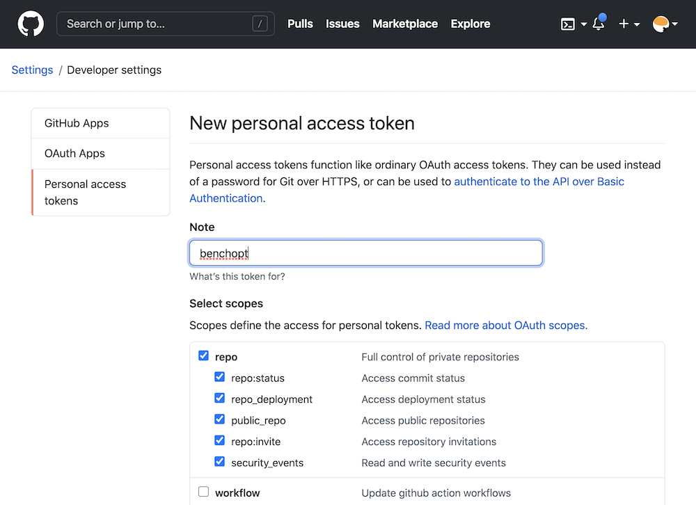
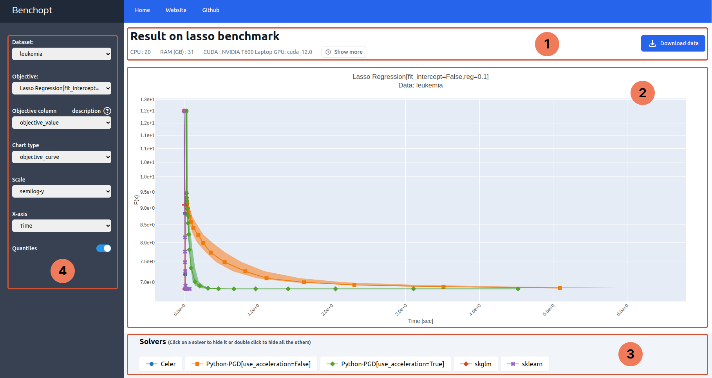

Manage and Visualize benchmark results#
Description of the benchmark results DataFrame#
Once the benchmark is run, the results are stored as a pd.DataFrame in a
.parquet file, located in a directory ./outputs in the benchmark
directory, with a .parquet file.
By default, the name of the file include the date and time of the run,
as benchopt_run_<date>_<time>.parquet but a custom name can be given using
the --output option of benchopt run.
The DataFrame contains the following columns:
objective_name|solver_name|dataset_name: the names of the different benchopt components used for this line.obj_description|solver_description: A more verbose description of the objective and solver, displayed in the HTML page.file_objective|file_solver|file_dataset: The filename of the objective, solver, and dataset used for this line.p_obj_{p}: the value of the objective’s parameterp.p_solver_{p}: the value of the solver’s parameterp.p_dataset_{p}: the value of the dataset’s parameterp.time: the time taken to run the solver until this point of the performance curve.stop_val: the number of iterations or the tolerance reached by the solver.idx_rep: If multiple repetitions are run for each solver with--n-rep, this column contains the repetition number.sampling_strategy: The sampling strategy used to generate the performance curve of this solver. This allow to adapt the plot in the HTML depending on each solver.objective_{k}: The value associated to the keykin theObjective.evaluate_resultdictionary.
The remaining columns are informations about the system used to run the
benchmark, with keys {'env_OMP_NUM_THREADS', 'platform', 'platform-architecture', 'platform-release', 'platform-version', 'system-cpus', 'system-processor', 'system-ram (GB)', 'version-cuda', 'version-numpy', 'version-scipy', 'benchmark-git-tag', 'run_date'}.
Collect benchmark results#
The result file is produced only once the full benchmark has been run.
When the benchmark is run in parallel, the results that have already been
computed can be collected using the --collect option with
benchopt run. Adding this option with the same command line will
produce a parquet file with all the results that have been computed so far.
Merge results from multiple runs#
Multiple runs of the same benchmark can be merged together using the
benchopt merge command. This allows to collect multiple runs, or to
aggregate results from different users. By default, the merged results contain
all lines from the different result files, with no additional processing.
The resulting file is stored in the benchmark directory with the name
merged_results.parquet. The name can be changed using the --output option of the benchopt merge command.
It is also possible to specify the --keep option whether to only keep
'all' lines, or to keep only the 'last' line per objective_name,
solver_name, dataset_name, and idx_repetition. In this case, only
the line from the most recent run will be kept for each evaluation.
Note that the run date is included in the result file in the run_date
columm. If it is not present in the original result file, benchopt uses
the file creation date as a proxy for the run date. This allows to easily
identify the most recent line when using the --keep 'last' option.
Clean benchmark results#
The results and cache of previously run benchmark can be cleaned using the
benchopt clean command. This command will remove the ./results and
./__cache__ directories in the benchmark directory.
Publish benchmark results#
Benchopt allows you to publish your benchmark results with one command
benchopt publish. Results can be published to GitHub (default) or to a
Hugging Face dataset repository, using the
--hub option:
$ benchopt publish ./benchmark_logreg_l2 --hub github # default
$ benchopt publish ./benchmark_logreg_l2 --hub huggingface
Publish to GitHub#
The default behaviour sends results to GitHub by opening a pull-request on the Benchopt results repository. Once the pull-request is merged it will appear automatically on the Benchopt Benchmarks website.
Workflow example:
$ git clone https://github.com/benchopt/benchmark_logreg_l2
$ benchopt run ./benchmark_logreg_l2
$ benchopt publish ./benchmark_logreg_l2 -t <GITHUB_TOKEN>
You see that to publish you need to specify the value of <GITHUB_TOKEN>.
This GitHub access token contains 40 alphanumeric characters that allow GitHub
to identify you and use your account.
After getting your personal token as explained below the last
line will read something like:
$ benchopt publish ./benchmark_logreg_l2 -t 1gdgfej73i72if0852a685ejbhb1930ch496cda4
Warning
Your GitHub access token is a sensitive information. Keep it secret as it is as powerful as your GitHub password!
Let’s now see how to create your personal GitHub token.
Obtaining a GitHub token#
Visit settings/tokens
and click on generate new token.
Then create a token named benchopt, ticking the repo box as shown below:

Then click on generate token and copy this token of 40 characters in a
secure location. Note that the token can be stored in a config file for benchopt
using benchopt config set github_token <TOKEN>. More info on config files can
be found in Configure Benchopt.
Publish to Hugging Face#
Results can also be published to a Hugging Face dataset repository. This is useful for sharing results privately or with a specific team, without going through the Benchopt website.
When results are published to Hugging Face, they are merged with any existing
results already in the repository for the same benchmark. This allows multiple
users to contribute results to the same dataset. The --keep option controls
whether to keep 'all' lines or only the 'last' line per unique
configuration when merging (default: 'last').
Workflow example:
$ git clone https://github.com/benchopt/benchmark_logreg_l2
$ benchopt run ./benchmark_logreg_l2
$ benchopt publish ./benchmark_logreg_l2 --hub huggingface \
-t <HF_TOKEN> -R <HF_REPO_ID>
where <HF_REPO_ID> is the Hugging Face dataset repository identifier,
e.g. my-org/benchopt-results. The repository is created automatically
if it does not exist. The HF token and repo can also be stored in a config
file for benchopt:
$ benchopt config set hf_token <TOKEN>
and in the benchmark config file (benchopt.yml in the benchmark directory):
hf_repo: my-org/benchopt-results
More info on config files can be found in Configure Benchopt.
Obtaining a Hugging Face token#
Visit https://huggingface.co/settings/tokens
and click on New token. Create a token with write access to allow
uploading files to a dataset repository.
Note
The huggingface_hub package must be installed to use this feature.
Install it with pip install huggingface_hub.
Plotting results#
The HTML dashboard is opened automatically after benchopt run. It can
also be regenerated at any time from a .parquet file:
$ benchopt plot path/to/benchmark
By default, benchopt displays the most recent result file. A specific file can be passed directly:
$ benchopt plot path/to/benchopt_run_<date>_<time>.parquet
Custom plot classes (see Add a custom plot to a benchmark) are also applied.
Dashboard walkthrough#
By default, the results are displayed in an HTML dashboard. Let’s explore the dashboard features.

Part 1: Header#
Part 1 contains the benchmark metadata: the benchmark title and the
specifications of the machine used to run it.
On the right hand side is a Download button to download the results
of the benchmark as .parquet file.
Part 2: Figure#
Part 2 is the main figure that plots the tracked metrics throughout the benchmark run. Its title shows the objective and the dataset names and their corresponding parameters that produced the plot.
Hovering over the figure will make a modebar appear in the right side. This can be used to interact with the figure, e.g. zoom in and out on particular regions of the plot.
Part 3: Legend#
The legend maps every curve to a solver.
Clicking on a legend item hides/shows its corresponding curve. Similarly, double-clicking on a legend item hides/shows all other curves. Finally, hovering over a legend item shows a tooltip with details about the solver.
Note
The displayed details about the solver are the content of the solver’s docstring, if present.
{kind=link}
{kind=link}